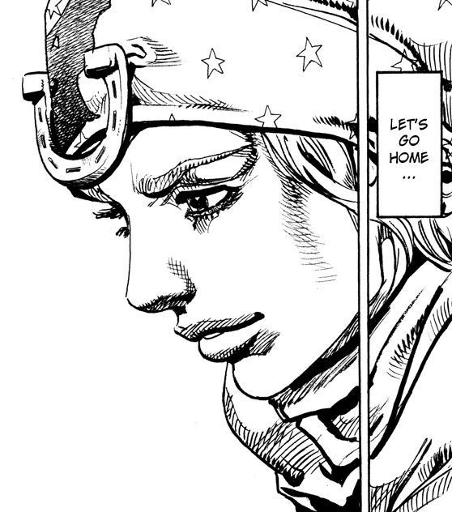
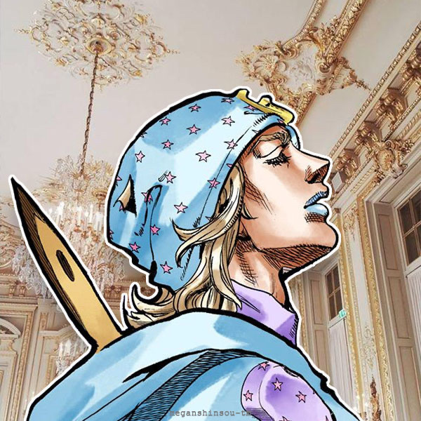
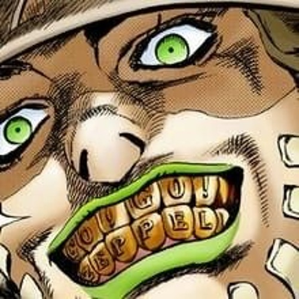

A Historia de Johnny Joestar

Johnny Joestar foi um jóquei de 19 anos que venceu a Stell Ball Run(SBR) de 1890,teve inicio na praia de San Diego com a linha de chegada localizado em Nova York. A distancia foi de 6.000 km a corrida terminou em 19 de janeiro de 1891 com a vitoria de Johnny Joestar,infelizmente em 1901 johnny acaba morrendo com o cranio esmagado por uma pedra na noite de 12de novembro de 1901 assim encerrando sua vida

Havia tambem seu parceiro chamado Gyro Zeppeli,Gyro é um mestre do Spin vindo do Rei de Nápoles . Ele se junta à corrida Steel Ball Run para ganhar anistia para uma criança que ele foi designado para executar. Seu domínio do Spin mais tarde permite que ele acesse o Ball Breaker.
